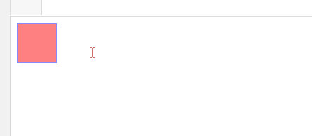

同时运动
实现思路：
同时改变长宽或者其他属性，也就是在单属性的语句后加入改变其他属性效果语句，达到函数每一次都改变多个属性效果
效果

函数编写
1.将要改变的属性以传入一个对象{width:300,height:300,opacity:100}为参数的方式进行传值
2.用for循环遍历的方式改变元素属性
3.设立isComplete变量，如果全部属性均已达到目标，则isComplete为true，定时器关闭
4.在判断opacity时我使用的是getStyle(obj,attr)*100，大家也可在getStyle函数里进行判断
真实案例